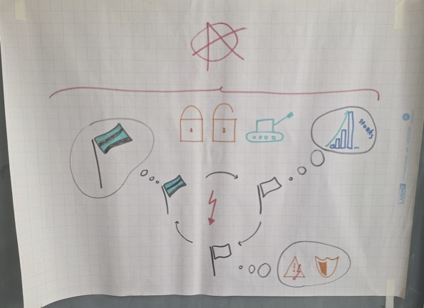

Zwei fundamentale Denkschulen der Internationalen Beziehungen im direkten Vergleich: Ist die Welt von Macht, Staatenkonkurrenz und Anarchie bestimmt, oder prägen Ideen, Normen und soziale Identitäten unser globales Zusammenleben?
Konzentriert sich auf die Struktur des internationalen Systems, die Anarchie und das primäre Streben souveräner Staaten nach Überleben und relativer Macht.
Betont, dass die Welt nicht naturgegeben ist, sondern durch soziale Interaktionen, gemeinsame Werte, Normen und kollektive Identitäten geformt wird.
Wählen Sie eine Dimension aus, um zu sehen, wie Neorealismus und Konstruktivismus fundamental unterschiedlich darauf blicken.
Das internationale System ist durch eine fundamentale Anarchie gekennzeichnet – es gibt keine übergeordnete Weltregierung oder Instanz, die Recht durchsetzen kann. Daher herrscht ständiger Zwang zur Selbsthilfe (Self-Help).
Macht (insb. militärische und ökonomische Fähigkeiten) ist die wichtigste Währung. Kooperation ist schwierig, weil Staaten stets fürchten müssen, dass Partner betrügen oder mächtiger werden (relative Gewinne).
Die Realität ist sozial konstruiert. Anarchie ist keine unveränderliche physikalische Gesetzmäßigkeit, sondern das Produkt menschlicher Praxis und Interaktion. Berühmt wurde Alexander Wendts Satz: "Anarchie ist, was Staaten daraus machen."
Ideen, gemeinsame Überzeugungen, kulturelle Normen und kollektive Identitäten bestimmen, wie Staaten ihre Interessen definieren und auf andere blicken.
Anwendung und kritische Grenzen beider Theorien im Praxistest.

Visuelles Material zur 4. Sitzung (Poster Neorealismus)
In der 4. Sitzung lag der Hauptfokus auf der konkreten Anwendung von Neorealismus und Konstruktivismus auf reale Konfliktmuster. Es wurde untersucht, inwiefern strukturelle Zwänge versus veränderte Wahrnehmungen und Normen das Handeln von Staaten lenken.
Vertiefung an Fallbeispielen, internationale Organisationen und globale Krisen.
In der 5. Sitzung wurden internationale Institutionen und globale Krisen (wie globale Klimapolitik und Sicherheitsregime) genauer unter die Lupe genommen. Es wurde diskutiert, ob Institutionen lediglich Instrumente mächtiger Staaten sind oder eigenhafte normative Kraft entfalten.
Vertiefung an Fallbeispielen, internationale Organisationen und globale Krisen.
In der 5. Sitzung wurden internationale Institutionen und globale Krisen (wie globale Klimapolitik und Sicherheitsregime) genauer unter die Lupe genommen. Es wurde diskutiert, ob Institutionen lediglich Instrumente mächtiger Staaten sind oder eigenhafte normative Kraft entfalten.
Eine kompakte Übersicht der Kernkategorien im direkten Kontrast.
Teste dein Verständnis: Ordne die folgenden Aussagen dem Neorealismus oder dem Konstruktivismus zu.
Du hast X von 4 Fragen richtig beantwortet.
Übernehme die Führung in einer Zuspitzung der Taiwan-Krise. Entscheide als Donald Trump (USA) oder Xi Jinping (China).